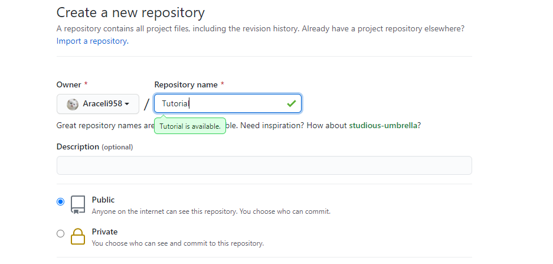
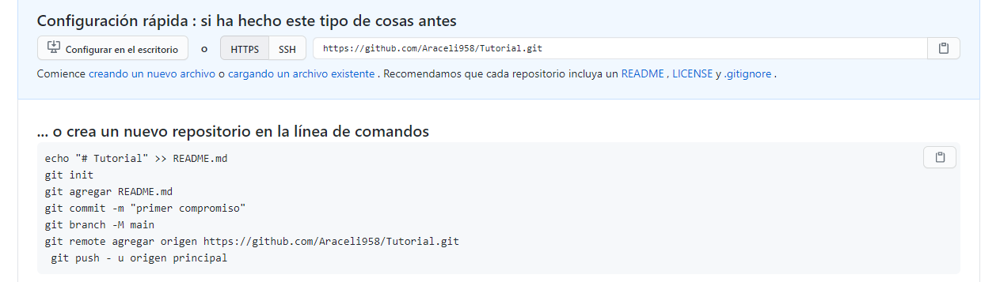
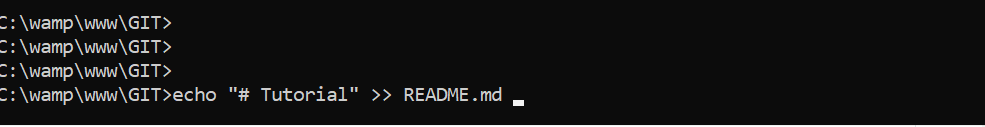

Procedimiento para almacenar proyecto en GIT HUB
Paso 1
En el primer paso se debe ingresar a la cuenta de GIT HUB, y se crea un nuevo repositorio con el nombre de Tutorial

Paso 2
Despues nos mostrara que ya se creo y los comandos para poder almacenar el proyecto que se realizo

Paso 3
Para este paso se ejecutaran los comandos que se encuentran anteriormente desde la consola, para que se pueda almacenar el proyecto en GIT HUB el caso del comando git init, git commit -m "primer compromiso" y git branch -M main ya no se ejecuatn ya que se utilizaron durante el proceso anterior. como se muetra en el ejemplo
